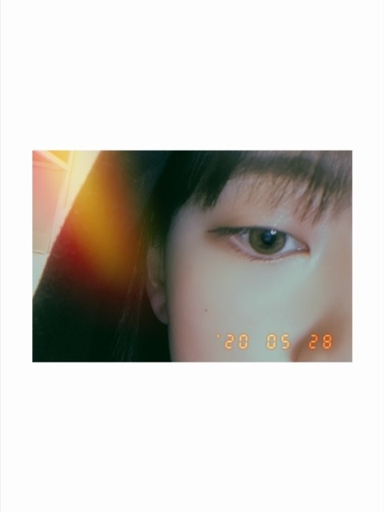
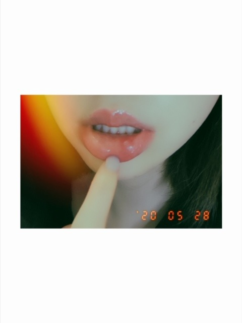
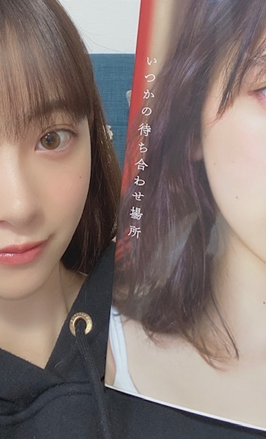
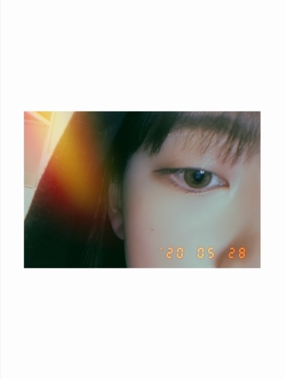
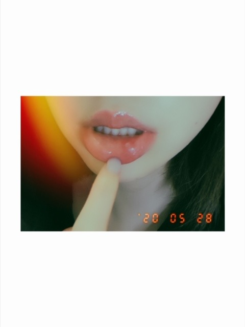
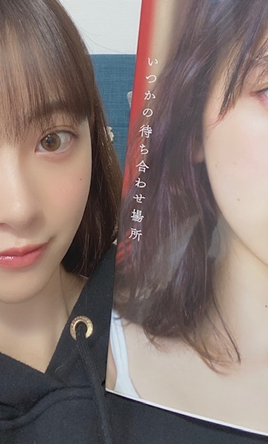

2020/0529Fri流れて雲
この2日間で天気の子3回観ました
昨日は雨上がりに虹を見ました
写真におさめようとしましたが
難しかったです
こんにちは
堀 未央奈 です
堀 が名字で 未央奈 が名前です
堀←はツチヘンです テヘンじゃないです
最近はBrandy Melville
というブランドに夢中です^o^
BMスタイルっていって甘辛コーデなんですけど
海外の学生スタイルみたいでかわいいんです
あとは
相変わらずパリジェンヌぽい格好もすきです
今年の夏たくさん着れたらな〜〜
ネットでぽちぽちお買い物しちゃってます...
程々にします...




口内炎なおりません
悪化してます
(見せてくスタイル)
そうそう
背中を押してくれる曲を教えてください
というコメントをみたので...
back numberさんの
SISTER
平日のブルース
頬を濡らす雨のように
は、歌詞がすごく良いです
是非聴いてみてください！

#いつかの待ち合わせ場所
たくさんの素敵な感想ありがとうございます✨
ちゃんとみてます！
ではでは
この2日間で天気の子3回観ました
昨日は雨上がりに虹を見ました
写真におさめようとしましたが
難しかったです
こんにちは
堀 未央奈 です
堀 が名字で 未央奈 が名前です
堀←はツチヘンです テヘンじゃないです
最近はBrandy Melville
というブランドに夢中です^o^
BMスタイルっていって甘辛コーデなんですけど
海外の学生スタイルみたいでかわいいんです
あとは
相変わらずパリジェンヌぽい格好もすきです
今年の夏たくさん着れたらな〜〜
ネットでぽちぽちお買い物しちゃってます...
程々にします...


口内炎なおりません
悪化してます
(見せてくスタイル)
そうそう
背中を押してくれる曲を教えてください
というコメントをみたので...
back numberさんの
SISTER
平日のブルース
頬を濡らす雨のように
は、歌詞がすごく良いです
是非聴いてみてください！

#いつかの待ち合わせ場所
たくさんの素敵な感想ありがとうございます✨
ちゃんとみてます！
ではでは
2020/05/29 14:12
コメント(361)
写真集買いましたよ～(^.^)
好き
未央奈ー
口内炎大変だねー涙
誤って、噛んじゃったりしないように気をつけないとねー。
行き詰まったら何もしないって、確かにー。
焦ってあがいちゃう癖があるけど、冷静になれる事って大事だよねー。
写真集のプレゼンや、46時間TVの準備やら、最近は忙しいのに、モバメもブログもちゃんと書いてくれて、未央奈のファン想いが伝わってるよー。ありがとう。
口内炎大変だねー涙
誤って、噛んじゃったりしないように気をつけないとねー。
行き詰まったら何もしないって、確かにー。
焦ってあがいちゃう癖があるけど、冷静になれる事って大事だよねー。
写真集のプレゼンや、46時間TVの準備やら、最近は忙しいのに、モバメもブログもちゃんと書いてくれて、未央奈のファン想いが伝わってるよー。ありがとう。
口内炎が噛んでもいないのにできたり、なかなか治らないとき。
私は栄養のバランスが原因のときが多いです。
あくまでも私の場合です。
私は栄養のバランスが原因のときが多いです。
あくまでも私の場合です。
未央奈ちゃんこんばんは!約2ヶ月ぶりのレコメン凄く楽しかった。未央奈太夫もう最高!早くメンバーにも2nd写真集の感想を聞けるといいね。のぎ動画配信決定!おめでとうね!また、新たな楽しみが増えて凄く嬉しい!写真集はまだ、手に入れていないので、手に入ったら、見た感想コメントしますね!次は堀工事中発売だね。大好きやおー
口内炎あるある
治りかけてきたのに噛んでしまってまた悪化
治りかけてきたのに噛んでしまってまた悪化
未央奈ちゃん。ブログ更新ありがとう！西の方は、昨日、今日と凄く良いお天気でした。口内炎気になりますね。一度病院で、診てもらってお薬頂く方が、早く治りますよ。
ブログ更新ありがとう〜！！
未央奈ちゃん、ブログとかインスタの更新度高めだからほんとに嬉しい
早く未央奈ちゃんと握手したいなぁ〜！！！
高2のふうかですって言ったら覚えててくれるかな〜？
覚えててくれたら天にも登る嬉しさ
今日も未央奈ちゃんは可愛いです！
口内炎痛そう なんかね、何度も唇の同じ所を歯で噛んじゃって口内炎では無いんだけど、口内炎みたいなのができたことあるの！！それもすっごく痛いから気をつけてね！！
なんかね、何度も唇の同じ所を歯で噛んじゃって口内炎では無いんだけど、口内炎みたいなのができたことあるの！！それもすっごく痛いから気をつけてね！！
それではこの辺で！！月曜日からテストなんだ
応援してくれてたら嬉しいなぁ〜！笑
未央奈ちゃんに会える日が早く来ますように！！
〜ふうかより〜
未央奈ちゃん、ブログとかインスタの更新度高めだからほんとに嬉しい
早く未央奈ちゃんと握手したいなぁ〜！！！
高2のふうかですって言ったら覚えててくれるかな〜？
覚えててくれたら天にも登る嬉しさ
今日も未央奈ちゃんは可愛いです！
口内炎痛そう
それではこの辺で！！月曜日からテストなんだ
応援してくれてたら嬉しいなぁ〜！笑
未央奈ちゃんに会える日が早く来ますように！！
〜ふうかより〜
こんばんは。
写真集見ました！ただただ綺麗です。
果物を抱えて笑顔で走っているシーンが一番印象的ですね。
まるで彼氏目線で旅行を味わえた気分。
存分に楽しめました。
写真集見ました！ただただ綺麗です。
果物を抱えて笑顔で走っているシーンが一番印象的ですね。
まるで彼氏目線で旅行を味わえた気分。
存分に楽しめました。
未央奈ちゃん可愛い
[流れて雲]ありがとー❗️
苗字が「堀」、名前が「未央奈」ということを、
改めて確認出来ました。ありがとうございます。
BMスタイルってすごくガーリーな感じですね。イタリアなのにK-POPみたい。パリジェンヌも似合うでしょう❗️
蚊に刺されたり、指をぶつけたり、嫌な事があった時は
全て口内炎のせいにしてみましょう。世界が変わります。
次のブログ楽しみです❗️
苗字が「堀」、名前が「未央奈」ということを、
改めて確認出来ました。ありがとうございます。
BMスタイルってすごくガーリーな感じですね。イタリアなのにK-POPみたい。パリジェンヌも似合うでしょう❗️
蚊に刺されたり、指をぶつけたり、嫌な事があった時は
全て口内炎のせいにしてみましょう。世界が変わります。
次のブログ楽しみです❗️
堀未央奈❤こんにちは❗昨日は、三回も同じアニメ観たんだね(^o^)好きなんだね(^_^)v
堀は名字で未央奈が名前って分かってるよ(^_^)v
別の所も口内炎出来ちゃったんだね(T_T)大丈夫？ご飯食べる時は痛いよね(T_T)
早く治るといいね。俺は、乃木坂の曲しか聴かないよ(*^^*)
今第二のコロナ感性が出てきてるから気を付けてね。未央奈これからも頑張ってね(*^^*)
未央奈❤可愛い(*^_^*)愛してる ♥❤
堀は名字で未央奈が名前って分かってるよ(^_^)v
別の所も口内炎出来ちゃったんだね(T_T)大丈夫？ご飯食べる時は痛いよね(T_T)
早く治るといいね。俺は、乃木坂の曲しか聴かないよ(*^^*)
今第二のコロナ感性が出てきてるから気を付けてね。未央奈これからも頑張ってね(*^^*)
未央奈❤可愛い(*^_^*)愛してる ♥❤
ブログ更新ありがとう〜
未央奈ちゃんが可愛すぎて最近眠れない…
でも、口内炎痛そうだから僕が代わりになってあげたい！
未央奈ちゃんが可愛すぎて最近眠れない…
でも、口内炎痛そうだから僕が代わりになってあげたい！
あえての自己紹介ブログから始まるとかマジでプロ(^.^)
口内炎の治りが早くなる食べ物教えてあげる。
魚肉ソーセージ！
お試しあれ！
魚肉ソーセージ！
お試しあれ！
ブログ更新ありがとうございます。
レコメン聞きました。
未央奈太夫すごく良かったです。
あと、のり堀コンビも
体調に気をつけてください。
これからも応援してます。
レコメン聞きました。
未央奈太夫すごく良かったです。
あと、のり堀コンビも
体調に気をつけてください。
これからも応援してます。
こんばんは。ブログ更新ありがとうございます。
私の口内炎と口角炎は、ウィルス性だったようで、アレルギーの薬＝免疫を抑える薬を1回飲むのをやめたら良くなりました。ん？私のウィルスはコロナなのでしょうか？熱が出ないので、病院に行くのはちょっと様子見ですね。
未央奈ちゃんの写真集、爆売れのようですね！！さすがです。
backnumberさんのSISTERは私のスマホにも入ってます。他の2曲も聞いてみますね。
ではまた。
私の口内炎と口角炎は、ウィルス性だったようで、アレルギーの薬＝免疫を抑える薬を1回飲むのをやめたら良くなりました。ん？私のウィルスはコロナなのでしょうか？熱が出ないので、病院に行くのはちょっと様子見ですね。
未央奈ちゃんの写真集、爆売れのようですね！！さすがです。
backnumberさんのSISTERは私のスマホにも入ってます。他の2曲も聞いてみますね。
ではまた。
未央奈の写真集届いたよ！課題終わったら見るね！
天気の子わたしも大好きです♡
写真集、みおなのドレス姿が素敵すぎて…！！
ブルーがとっても似合ってて綺麗でした♡
そして口内炎…痛そう(°_°)
私もよく出来ます！口内炎に良いって病院の先生から言われた食べ物！
チーズとか納豆とかマグロの赤身…などなどだよ！
早くよくなりますように！！（；＿；）
写真集、みおなのドレス姿が素敵すぎて…！！
ブルーがとっても似合ってて綺麗でした♡
そして口内炎…痛そう(°_°)
私もよく出来ます！口内炎に良いって病院の先生から言われた食べ物！
チーズとか納豆とかマグロの赤身…などなどだよ！
早くよくなりますように！！（；＿；）
めっちゃ良かった！
堀ちゃん！！更新ありがとう！！
口内炎大丈夫？？
ビタミンCが入ってるもの
よーく口内炎に効くよ！！
しみるけど、ポンカンとか柑橘系
めっちゃおすすめ！！
先日のブログに書いてあった
backnumberのリッツパーティー！
聴いたらどハマりしちゃいました！
最近は♪海岸通りもハマってます！
僕もSISTERも好きです！
backnumberさんの
堀ちゃん最近おすすめ曲
聞きたいです！
教えてくださいね！
水曜のレコメン最高でした！！
未央奈太夫また見せてください！笑
自粛明け、
自分の手で買いたかったので…
写真集、明日買いに行きます！
感想待っててね〜
次回の更新も楽しみに待ってますよ！
では！
体調1番で！！
おやすみおな〜！
口内炎大丈夫？？
ビタミンCが入ってるもの
よーく口内炎に効くよ！！
しみるけど、ポンカンとか柑橘系
めっちゃおすすめ！！
先日のブログに書いてあった
backnumberのリッツパーティー！
聴いたらどハマりしちゃいました！
最近は♪海岸通りもハマってます！
僕もSISTERも好きです！
backnumberさんの
堀ちゃん最近おすすめ曲
聞きたいです！
教えてくださいね！
水曜のレコメン最高でした！！
未央奈太夫また見せてください！笑
自粛明け、
自分の手で買いたかったので…
写真集、明日買いに行きます！
感想待っててね〜
次回の更新も楽しみに待ってますよ！
では！
体調1番で！！
おやすみおな〜！
おかしいですね。
口内炎には僕の所に飛んでくる様に
言ったんですが、静岡辺りで道に
迷ってんのかな。
口内炎について僕も調べたけど
本人もそうしただろうから
多くは語りません。
睡眠、ビタミンB2・B6・Cの摂取
ストレスの軽減、夜更かし厳禁です。
これは予防の方ね。
治療は市販の薬を使って様子見して
改善しないならお医者さんに行くと
いった感じですね。
アトピー性のもの、大病のサインなんて
事もあるらしいので気を付けて下さい。
あ、ガッツリ語ってしまいましたね。
嘘つきました。
ストレスの軽減は仕事柄難しいかも
しれないけど、他は出来ますよね？ね？
迷惑でなければ、僕の優しさをお裾分け
するのでストレス軽減にお使い下さい。
僕の優しさ！
未央奈ちゃんの所まで飛んでけ！
では×3
口内炎には僕の所に飛んでくる様に
言ったんですが、静岡辺りで道に
迷ってんのかな。
口内炎について僕も調べたけど
本人もそうしただろうから
多くは語りません。
睡眠、ビタミンB2・B6・Cの摂取
ストレスの軽減、夜更かし厳禁です。
これは予防の方ね。
治療は市販の薬を使って様子見して
改善しないならお医者さんに行くと
いった感じですね。
アトピー性のもの、大病のサインなんて
事もあるらしいので気を付けて下さい。
あ、ガッツリ語ってしまいましたね。
嘘つきました。
ストレスの軽減は仕事柄難しいかも
しれないけど、他は出来ますよね？ね？
迷惑でなければ、僕の優しさをお裾分け
するのでストレス軽減にお使い下さい。
僕の優しさ！
未央奈ちゃんの所まで飛んでけ！
では×3
更新ありがとう❤
未央奈ちゃんの目と口のアップ写真
くりくりおめめかわい～
口の口内炎悪化したんですか？
心配です。
ゆっくり休んでください。
お大事に
未央奈ちゃんの目と口のアップ写真
くりくりおめめかわい～
口の口内炎悪化したんですか？
心配です。
ゆっくり休んでください。
お大事に
未央奈ちゃんこんばんは☺️
未央奈ちゃんのセンス好きだよ♪
口内炎にはビタミン ️
早く治りますように
明日もHAPPYを
お休みなさい(^-^ゞ
未央奈ちゃんのセンス好きだよ♪
口内炎にはビタミン ️
早く治りますように
明日もHAPPYを
お休みなさい(^-^ゞ
未央奈ちゃんブログ更新ありがとー
質問です‼️
未央奈ちゃんが最近ハマった曲は何ですか？
答えてくれると嬉しいです‼️
これからも応援してます‼️
頑張ってください
大好きでーす❤️
質問です‼️
未央奈ちゃんが最近ハマった曲は何ですか？
答えてくれると嬉しいです‼️
これからも応援してます‼️
頑張ってください
大好きでーす❤️
未央奈〜
応援しとるよー^ ^
応援しとるよー^ ^
未央奈ちゃん、ブログ更新ありがとう〜♡♡
今回もコラージュ画像可愛すぎる！！
もんぞーとのツーショット大好き人間になりました！！！
名前をいきなり紹介してくれるところ可愛すぎ!!!未央奈ちゃんの名前、本当に魅力的で、教科書とかで、同じ感じがあるだけで、笑顔になれます！！
口内炎痛そー(><)
辛いと思うけど、昨日のSHOWROOMみたいにビタミン沢山とって、早く治ってね！
見せてくれる所もキュートでだいすき！
モバメの写真も可愛い♡♡
オススメの曲聞いてみます！
写真集本当に良すぎて毎日見てるー！
可愛い、大人っぽい、大好き好き、の連発で幸せな気持ちに沢山してくれるー!!!
撮影本当にお疲れ様でしたー！
沢山宣伝もしてくれて、感謝しまくりです！
これからも色んな人に写真集を見てもらいたい！
私たちファンも大切で宝物で、自慢の1冊です！
未央奈ちゃんが幸せで溢れていますように！
今日も大好きで、大好きすぎます！
今回もコラージュ画像可愛すぎる！！
もんぞーとのツーショット大好き人間になりました！！！
名前をいきなり紹介してくれるところ可愛すぎ!!!未央奈ちゃんの名前、本当に魅力的で、教科書とかで、同じ感じがあるだけで、笑顔になれます！！
口内炎痛そー(><)
辛いと思うけど、昨日のSHOWROOMみたいにビタミン沢山とって、早く治ってね！
見せてくれる所もキュートでだいすき！
モバメの写真も可愛い♡♡
オススメの曲聞いてみます！
写真集本当に良すぎて毎日見てるー！
可愛い、大人っぽい、大好き好き、の連発で幸せな気持ちに沢山してくれるー!!!
撮影本当にお疲れ様でしたー！
沢山宣伝もしてくれて、感謝しまくりです！
これからも色んな人に写真集を見てもらいたい！
私たちファンも大切で宝物で、自慢の1冊です！
未央奈ちゃんが幸せで溢れていますように！
今日も大好きで、大好きすぎます！
自分もよく口内炎になり調べたけのですが、口内炎治すにはイソジンで口洗浄すると早いって聞きました！
(たぶん、コロナからのストレスなので効くかわかりませんが試してみてください)
(たぶん、コロナからのストレスなので効くかわかりませんが試してみてください)
未央奈ちゃん、こんばんは！
いつかの待ち合わせ場所、今日買ったよ～。
写真集見てる時は彼氏目線で楽しく見れたよ(*´ω｀*)
パスタ食べてる時の未央奈ちゃんの表情が好きだな～。
水着姿も何枚かあったけど、スタイル良いし肌が白くて綺麗で見惚れてしまうぐらいだった～。
ポストカードもくまざわ書店限定版とランダムのポストカード２枚も手に入れて満足(*´ω｀*)裏のメッセージも良かったよ～。
いつかの待ち合わせ場所、今日買ったよ～。
写真集見てる時は彼氏目線で楽しく見れたよ(*´ω｀*)
パスタ食べてる時の未央奈ちゃんの表情が好きだな～。
水着姿も何枚かあったけど、スタイル良いし肌が白くて綺麗で見惚れてしまうぐらいだった～。
ポストカードもくまざわ書店限定版とランダムのポストカード２枚も手に入れて満足(*´ω｀*)裏のメッセージも良かったよ～。
天気の子って萌音ちゃんの作品だっけ？
背中を押してくれる曲！僕なら、林原めぐみさんの「Give a reason」です。元気出ますよ
体調崩さないようにこれからも頑張って！
映画好きかどうか分からないけど本日キングダムやるので見てはどうですか？
見たら感想聞かせて〜
映画好きかどうか分からないけど本日キングダムやるので見てはどうですか？
見たら感想聞かせて〜
未央奈さんいつも忙しいのにマメにブログ更新してくれてありがとう。天気の子は見てないから ♂️けどいつかの待ち合わせ場所の写真集良かったですよ。もう３回全部のページ読んだよ。口内炎大丈夫かな？昨日のSHOWROOMの時より悪くなるって医者で１度診てもらったら？未央奈さん大好き❤️です。いつもモバメもらっていますありがとう。お家時間楽しんでいますか？乃木坂46の活動は再開しないの？未央奈さん(*^o^)／＼(^-^*)作るの上手いね。101回目のプロポーズは30回1話から最終回迄見たよ。毎日必ず見るのは日本テレビのニュースエブリイです。では
ブログ更新ありがとー
そーいえば前回？の45時間tvの時も口内炎できてたね笑
今回は調子いい時にやりたいね〜♪
そーいえば前回？の45時間tvの時も口内炎できてたね笑
今回は調子いい時にやりたいね〜♪
未央奈さん、こんばんは
自分も虹、見ました
未央奈さんと同じ虹を
共有できて嬉しいです(^_^)
右目
左目
唇。。。
え～っ！
それは、痛そうだ～
お薬つけたほうがいいですよ
写真集の感想、読んで頂いて
ありがとうございます
今度、BMスタイル見せてくださいな
自分も虹、見ました
未央奈さんと同じ虹を
共有できて嬉しいです(^_^)
右目
左目
唇。。。
え～っ！
それは、痛そうだ～
お薬つけたほうがいいですよ
写真集の感想、読んで頂いて
ありがとうございます
今度、BMスタイル見せてくださいな
多分初めてコメントします
突然ですがおすすめのヘア（ポニーテール・三つ編みなど）教えてください 出来れば私は髪が長いので長いバージョンだと嬉しいです
出来れば私は髪が長いので長いバージョンだと嬉しいです
またの更新待ってます
突然ですがおすすめのヘア（ポニーテール・三つ編みなど）教えてください
またの更新待ってます
口内炎は氷を口に含んで冷やしたらええで
口内炎、よくなりませんか。
ビタミンB2や睡眠が不足してるのかなぁ。
意識して摂ってみてくださいね☆
ビタミンB2や睡眠が不足してるのかなぁ。
意識して摂ってみてくださいね☆
かわいすぎ！！
口内炎味噌汁飲むと治るよ‼︎
堀ちゃんの口内炎大きくなってるやん⁉大丈夫じゃ無さそう(;-;) 幸いアフタ性口内炎ではないから、チョコラBB飲んで早く治してね❗ビタミンB2が不足するとなりやすいから。もしかしたら写真集のプレッシャーでストレスが溜まっていたのかも⁉ウィルスが入ると大変な事になるからマジで体調が戻るまで大事をとって下さいね❗お願いいたします❗ヽ(´o｀;
未央奈さん、ブログありがとう！
毎日写真集眺めてます。キレイです。可愛いです。
見るたびに発見があってドキドキしてます。
今日の写真も可愛い。
口内炎早くよくなるといいね。僕はチョコラBBかアリナミン飲んでます。
毎日写真集眺めてます。キレイです。可愛いです。
見るたびに発見があってドキドキしてます。
今日の写真も可愛い。
口内炎早くよくなるといいね。僕はチョコラBBかアリナミン飲んでます。
未央奈さん、ブログありがとう！
毎日写真集眺めてます。キレイです。可愛いです。
見るたびに発見があってドキドキしてます。
今日の写真も可愛い。
口内炎早くよくなるといいね。僕はチョコラBBかアリナミン飲んでます。
毎日写真集眺めてます。キレイです。可愛いです。
見るたびに発見があってドキドキしてます。
今日の写真も可愛い。
口内炎早くよくなるといいね。僕はチョコラBBかアリナミン飲んでます。
堀の字がてへんになっているとどうしても気になってしまう…
一時期、ホ・リミオナって呼び方されてなかったっけ？笑
口内炎のつらいところって、痛いのもそうだけど、なにより食べるときに口内炎が気になるという邪念が入るところだよね
写真集２冊目、無事受け取りました～
あと、のぎたびも！
後日ゆーーーっくりと眺めます笑
一時期、ホ・リミオナって呼び方されてなかったっけ？笑
口内炎のつらいところって、痛いのもそうだけど、なにより食べるときに口内炎が気になるという邪念が入るところだよね
写真集２冊目、無事受け取りました～
あと、のぎたびも！
後日ゆーーーっくりと眺めます笑
未央奈ブログ更新ありがとう！
天気の子3回も観るなんてホント好きなんだね。
虹の写真って意外と難しいよね。目では綺麗に見えてるのに写真としては良い写真にならなかったり。
堀未央奈という名前を間違えてるのたまにあるよね。見るとなんか残念な気持ちになる。
カチューシャとおでこ可愛い！こういう髪型も似合うね。
口内炎まだ治らないんだね。イソジンで口を消毒して、ビタミン摂取していっぱい寝よう。早く治りますように。
back numberさんのその3曲良いね。平日のブルース良い歌詞。
写真集何度も見てるよ。この写真も可愛い、この表情も好きって思って見てて楽しい。やっぱり未央奈のこと大好きだなあと。
ではでは！
天気の子3回も観るなんてホント好きなんだね。
虹の写真って意外と難しいよね。目では綺麗に見えてるのに写真としては良い写真にならなかったり。
堀未央奈という名前を間違えてるのたまにあるよね。見るとなんか残念な気持ちになる。
カチューシャとおでこ可愛い！こういう髪型も似合うね。
口内炎まだ治らないんだね。イソジンで口を消毒して、ビタミン摂取していっぱい寝よう。早く治りますように。
back numberさんのその3曲良いね。平日のブルース良い歌詞。
写真集何度も見てるよ。この写真も可愛い、この表情も好きって思って見てて楽しい。やっぱり未央奈のこと大好きだなあと。
ではでは！
未央奈ちゃん。
口内炎には大正製薬のレビオが効きます。だまされたと思って試してみては？それと口内炎の痛みがピークのときは、直る一歩手前なので、がんばってください。心配しなくても、写真集はちゃんと買うから。
口内炎には大正製薬のレビオが効きます。だまされたと思って試してみては？それと口内炎の痛みがピークのときは、直る一歩手前なので、がんばってください。心配しなくても、写真集はちゃんと買うから。
未央奈ちゃん♥
こんばんはぁ。昨日、口内炎がつらそうでしたが大丈夫ですか？
写真集は、TSUTAYAさんに昨日、頼みました。
特典が楽しみ、❗❗
未央奈の水色のドレスとショートパンツ姿が特に大好きです。♥♥♥
未央奈は、表情が豊かだから
メチャ楽しく、癒やされ元気が、大いにでるねー。♥
いつも、ありがとう。♥
こんばんはぁ。昨日、口内炎がつらそうでしたが大丈夫ですか？
写真集は、TSUTAYAさんに昨日、頼みました。
特典が楽しみ、❗❗
未央奈の水色のドレスとショートパンツ姿が特に大好きです。♥♥♥
未央奈は、表情が豊かだから
メチャ楽しく、癒やされ元気が、大いにでるねー。♥
いつも、ありがとう。♥
みおな、こんばんは！更新ありがとう。 近況報告ありがとうございます。 口内炎、早く良くなりますように！ では、毎日みおなに良いこと沢山ありますように！ おやすみおな！！
昨日のshowroom見ました‼︎
南フランスのこと南仏って言ってるんですね（笑
写真集読みました‼︎
やっぱり未央奈推しでよかったなと思いました。
これからも頑張ってください‼️
南フランスのこと南仏って言ってるんですね（笑
写真集読みました‼︎
やっぱり未央奈推しでよかったなと思いました。
これからも頑張ってください‼️


ちゃんと病院へいってくださいね
見た感じだとちょっと噛んでしまった
もしくは硬いものを食べて傷ついてしまった所に
菌が入り口内炎になったみたいな感じもしますね
あと睡眠の質も大事にしてくださいね
休んでいるようで休めていないこともあるんですよ